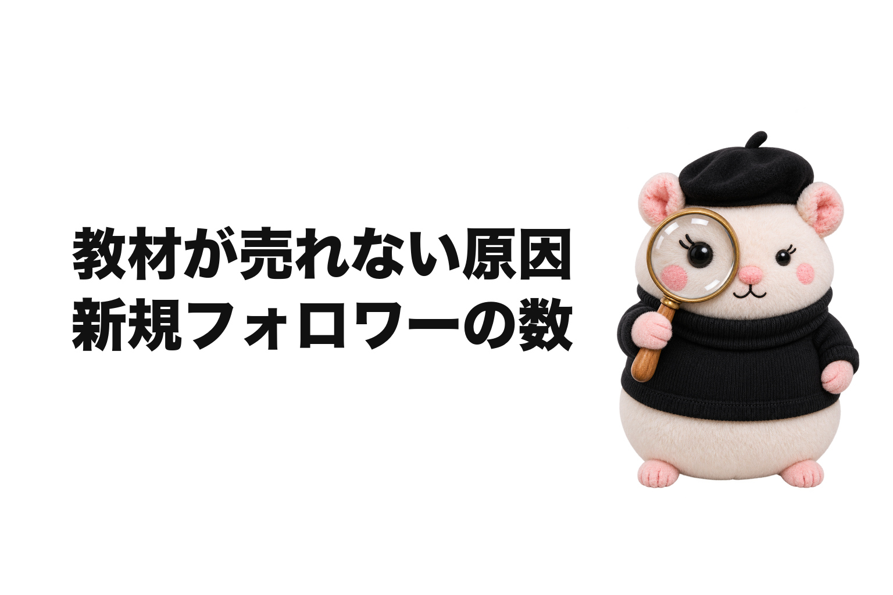

教材が急に売れなくなったら、まず「新規フォロワーの数」を見てください。
ぼくのいちばん売れている教科書は、新規フォロワーが10人増えるごとに、だいたい1部売れていました。
新規フォロワーが4分の1になったら、売れる数も4分の1くらいになりました。
これは「もっと売りたい」という話ではありません。
買った人の役に立つと自信を持って出している教材なら、困るのは、それを必要としている人に届いていないことです。
ページの中身や値段を直す前に、見るところがあります。
届かなくなった理由と、すぐやることを3つずつまとめました。
この記事を書いた人

この記事は、noteとBrainと自分のサイトで教材を出し、フォロワーゼロから2ヶ月で利益101.5万円を出してきたきくりんが書いています。
今回は、教材が4日売れなかったので、自分の販売の記録とXの数字を合わせて調べました。
新規フォロワー10人で、1部売れていた
教材の売れ行きは、新規フォロワーの数とほぼ同じ形で動きます。
下記のデータは、ぼくのいちばん売れている教科書の数字です。
その教科書を案内しているXのアカウントで、こうなっていました。
どちらも、10人に1部くらいです。
週ごとに見ても、2つの数字はほぼ同じ形で上下していました。
おもしろいのは、販売ページに来た人が買う割合です。
売れていたときも、売れなくなってからも、1割前後で大きくは変わっていません。
つまり、ページが悪くなったのではありません。
教材を必要としている人に、そもそも届く数が増えなくなっていたんです。
ただし、フォローされた日に買うわけではありません。
フォロワーになって、何日か投稿を見て、それから買う人が多いようです。
売れなくなった理由は3つ
細くなったところを順に調べると、理由は3つでした。
① 新規フォロワーが増えなくなった
いちばん大きいのが、これです。
次の章でくわしく書きます。
② 販売ページへの入口が細くなった
ぼくの場合、販売ページに来る人の多くは、Xの長い記事(X記事)と固定ポストから来ていました。
X記事の本数を、週15本ほどから6本ほどに減らしたら、そこから来る人がほぼいなくなりました。
固定ポストも、新しくして2〜3週たつと、来る人が数分の1に減ります。
③ 買う理由になる出来事がなかった
よく売れた週には、値上げや新しい版の公開がありました。
何もない週は、1〜2部です。
「今、買う理由」がない週は、フォロワーが増えても売れにくくなります。
ちなみに、ぼくの教材は3部売れるごとに値段が上がります。
先に信じて買ってくれた人ほど、安く手に入る形です。早く買った人が損をしないように、この形にしています。
新規フォロワーは、自分のフォローで増えていた
新規フォロワーが減った理由は、シンプルでした。
ぼくが、自分からフォローするのをやめていたんです。
フォローしていたころは、1日8〜9人をフォローしていました。
それが1日1人未満になって、新規フォロワーも1日11人から2人に減りました。
フォローしなくても自然に増えるのは、1日1〜2人です。
フォロワーの増え方の大半は、こちらからのフォローに返してもらった分でした。
ここで言えるのは、「一緒に動いている」までです。
フォローされたから返した分もまざっているので、全部がフォローのおかげとは言い切れません。
それでも、自分の手で動かせる数字は、ここしかありません。
すぐやること3つ
1. 毎週、2つの数字だけを書く
「新規フォロワー」と「売れた部数」です。
毎週月曜に、表に1行ずつ足すだけで十分です。
10人に1部のような自分の割合が分かると、売れない週でもあわてずにすみます。
足りないのは「人の数」なのか、「買う理由」なのかが見えるからです。
2. 教材のテーマで困っている人と、毎日つながる
あなたの教材のテーマで、実際に手を動かして、つまずいている人をフォローします。
目安は1日20人です。
フォローするのは、売りこむためではありません。
あなたの教材で助けられる人と出会うためです。
ふだんの投稿で役に立てれば、教材が必要になったときに思い出してもらえます。
合わない人に、無理にすすめる必要はありません。
Xのルールでは、自動でフォローするのは禁止です。
一気にたくさん押すと、アカウントに制限がかかることもあります。ぼくも一度、一時的にロックされました。
ぼくは、フォローする人の候補探しをAIに任せて、押すところだけ自分でやっています。
AIをどこまで使うかは、各サービスの規約を確かめたうえで、ご自身の責任で決めてください。
3. 固定ポストを2週間ごとに入れかえる
プロフィールを見た人が、最初に読むのが固定ポストです。
新しくした週がいちばん読まれて、2〜3週で読まれなくなります。
もう1つ、値段の書き方に気をつけてください。
「いまの価格は◯円(◯月◯日時点)」と書くと、値上げしたとたんに古くなります。
ぼくも今日、値上げしたのに固定ポストの値段が古いまま残っているのを見つけて、あわてて直しました。
値段は「3部売れるごとに上がります。いまの値段はページで」と書くと、古くなりません。
まとめ
教材が急に売れなくなったら、ページを直す前に、新規フォロワーの数を見てください。
売れなくなった理由は、この3つでした。
- 新規フォロワーが増えなくなった
- 販売ページへの入口が細くなった
- 買う理由になる出来事がなかった
すぐやることも3つです。
- 毎週、新規フォロワーと部数を書く
- 教材のテーマで困っている人と、毎日つながる
- 固定ポストを2週間ごとに入れかえる
数字を見るのは、売るためというより、役に立てる人に届いているかを確かめるためです。
自信のある教材なら、届く人が増えるほど、助かる人も増えます。
あなたのアカウントでは、新規フォロワー何人で1部売れていますか。
まずは先週の2つの数字を、1行だけ書いてみてください。
▼ネタの作り方から、AIで教材にまとめて売るまで、やったことを1冊にまとめてあります
フォロワーゼロから2ヶ月で利益101.5万円まで、数字と失敗と手順を全部書いた教科書です。
録音から記事、教材、販売ページ、売れたあとの台帳まで。うちで毎日使っているツールも付録に入れました。
『noteから始める「AI×◯◯」コンテンツ販売の教科書｜フォロワーゼロから2ヶ月で利益101.5万円』


販売価格は3部売れるごとに2,000円ずつ値上がりします（上限あり）。内容・最新価格は販売ページをご確認ください。